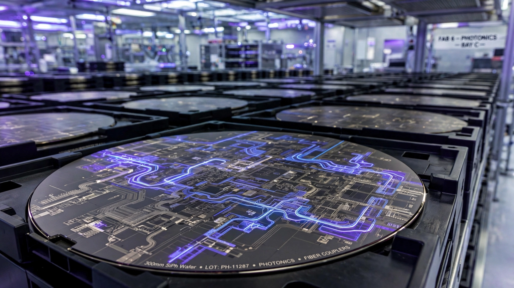

Tower Semi Just Spent $920M on Silicon Photonics Fabs. 70% Was Already Spoken For.
Tower Semiconductor announced a $3 billion Japan expansion on Tuesday, backed by a $1 billion government grant. It caps a $920 million equipment buildout that has already claimed more than 70 percent of the resulting silicon photonics capacity through 2028, mirroring the GPU allocation scramble of 2023 but for a component most people have never heard of: the optical chip inside every AI data center transceiver.

Who reserved it? Hyperscalers building AI training clusters that need tens of thousands of optical transceivers per facility, each containing a silicon photonics chip that converts electrical GPU signals into light pulses for fiber-optic cable. Without these chips, a GPU is a space heater with no way to talk to its neighbors. Without silicon photonics wafers, there are no chips to put inside the transceivers that make billion-dollar data centers function as a single machine. If you use a cloud GPU, run an AI model, or wait for an inference response, the speed and availability of that service depend in part on whether enough of these optical chips exist to wire the data center together.
The $920 million was committed in February, when Tower reported record Q4 2025 results and CEO Russell Ellwanger announced a plan to reach more than five times Q4 2025 monthly SiPho wafer shipments by December 2026, with customers reserving over 70 percent of the new capacity through 2028 via prepayment agreements. Tuesday’s $3 billion announcement wraps that equipment buildout into a broader Japan expansion: converting the Arai facility for 300 mm silicon photonics production by Q4 2027, then building a new fab adjacent to the existing Uozu site. Shares jumped more than 18 percent in premarket trading. The reaction reflects a structural bet: silicon photonics fab capacity is scarce, demand visibility stretches years into the future, and the number of companies that can produce these wafers on 300 mm lines sits in the low single digits.
But Tower is only one node in a supply chain where every major producer reports the same condition: sold out, reserved, fully allocated. Cross-referencing capacity commitments across the three largest silicon photonics wafer suppliers reveals that less than 30 percent of projected 2028 global capacity remains available for uncommitted buyers, a gap that will widen as the industry transitions from 800-gigabit to 1.6-terabit optical links and copper alternatives hit their physics ceiling.
Sold Out Across the Board
Every silicon photonics supplier of consequence tells the same story: capacity expansions announced and immediately claimed by customers who signed long-term reservation commitments before production began.
| Company | Expansion | Investment | Reserved | Timeline |
|---|---|---|---|---|
| Tower Semiconductor | 5× wafer output vs. Q4 2025 | $920M (SiPho/SiGe equipment) | 70%+ through 2028 (revenue commitments) | Q4 2027 (Phase 1) |
| STMicroelectronics | 4× PIC100 production vs. H1 2026 | Undisclosed | “Fully underpinned” (capacity reservations) | By 2027 |
| Lumentum (laser chips) | 2× YoY chip volume | Greensboro InP fab acquisition | Japan fab “fully allocated” (existing production) | NC fab ~18 months out |
Note: Expansion multipliers are against different baselines and the three companies’ “reserved” figures describe different commitment types. They are not directly comparable in magnitude but collectively illustrate the same condition: capacity spoken for before production begins.
STMicroelectronics entered high-volume production of its PIC100 silicon photonics platform in March 2026, shipping 800G and 1.6T transceivers to hyperscalers, and stated that it is “planning and executing on capacity expansions to enable more than quadrupling of production by 2027.” That expansion is “fully underpinned by customers’ long-term capacity reservation commitments.” Every wafer in the ramp is spoken for.
Lumentum, which supplies the indium phosphide laser chips that pair with silicon photonics receivers inside transceivers, reported that its Japanese wafer fabrication facility is “fully allocated,” with laser chip volumes doubling year over year, 200G EML revenues more than doubling sequentially, and a multihundred-million-dollar purchase order booked for the first half of 2027. CEO Michael Hurlston told analysts on the Q3 2026 earnings call that the company is “significantly under-shipping demand” on pump lasers and “having to make choices as to who we support.” To build future capacity, Lumentum acquired an indium phosphide fab in Greensboro, North Carolina, but revenue from that plant is roughly 18 months away.
Marvell Technology, which builds the transimpedance amplifiers and driver chips that sit alongside silicon photonics PICs inside completed transceiver modules, expects interconnect revenue to grow more than 70 percent year over year in fiscal 2027, with TIAs and drivers expected to exceed a billion-dollar annualized run rate. From foundry wafers to laser chips to analog drivers, every major node in the optical supply chain is either fully reserved or running at rated capacity.
Less Than 30% of 2028 Capacity Remains Unreserved
Nobody publishes global silicon photonics wafer capacity figures, so assembling them requires triangulation across earnings calls, investment disclosures, and market research. According to LightCounting data cited in STMicro’s March press release, the data center pluggable optics market reached $15.5 billion in 2025 and is projected to grow at 17 percent CAGR (roughly double the broader semiconductor market’s ~8 to 9 percent growth rate) to surpass $34 billion by 2030, with silicon photonics’ share climbing from 43 percent to 76 percent over that period. Co-packaged optics adds another $9 billion by 2030.
Since the silicon photonics PIC represents approximately 20 to 30 percent of total transceiver module cost, a 76 percent share of a $34 billion market implies PIC wafer demand of $5 to $8 billion annually by 2030, requiring roughly 1.2 to 2.0 million 300 mm wafer starts per year at industry-estimated specialty process costs of $3,000 to $5,000 per wafer (roughly 2 to 3 times the cost of a mature 200 mm CMOS wafer, but a fraction of leading-edge 3 nm logic wafers at $16,000 to $20,000, reflecting the specialized germanium and waveguide integration steps unique to photonics). For scale, that would place silicon photonics wafer output in the same range as today’s global SiGe BiCMOS production, a market that took two decades to reach its current volume.
Current global silicon photonics wafer capacity across Tower, STMicro, GlobalFoundries, and smaller players is estimated in the low hundreds of thousands of wafer starts per year. An important caveat: no public data source provides a more precise figure, and the difference between 200,000 and 400,000 starts as the baseline would materially change the gap analysis. Combining Tower’s fivefold expansion with STMicro’s quadrupling roughly triples the global supply base by 2028. But if 70 percent of Tower’s new output and 100 percent of STMicro’s are reserved, and if existing fabs run at 85 percent utilization or above, unreserved capacity falls below 30 percent of projected 2028 demand.
Inside that gap lives the price premium. Any AI infrastructure buildout that has not locked in silicon photonics supply faces lead times of 12 to 18 months and component costs 15 to 25 percent above contracted rates. On a $200 million transceiver procurement, the size a midsize hyperscaler data center requires, that premium translates to $30 to $50 million in avoidable cost.
Copper Runs Out at 1.6 Terabits
Copper offers an alternative at lower data rates, and a good one: direct-attach cables carry signals between racks without any optical conversion, cheaper per link and simpler to deploy. But the physics of signal attenuation impose hard distance limits that shrink as data rates climb. The reach figures below reflect published specifications from the Optical Internetworking Forum and IEEE 802.3 working groups (802.3ck for 100G-per-lane, 802.3df for 200G-per-lane) for passive and active copper links at each aggregate data rate.
| Data Rate | Max Copper Reach | Practical Impact |
|---|---|---|
| 400 Gbps | ~3 meters | Works for intra-rack and short inter-rack links |
| 800 Gbps | ~2 meters | Adequate for adjacent racks only |
| 1.6 Tbps | ~1 meter | GPU-to-GPU only; cannot reach switches or spine |
One meter connects a GPU to its neighbor but not a rack to a switch, a switch to a spine, or a spine to the building next door. Silicon photonics is the only technology operating at 1.6T data rates over the 10 to 2,000 meters that modern data center fabrics require. The migration from 800G to 1.6T is not merely a bandwidth upgrade. It is a substitution cliff where copper alternatives vanish entirely, converting every link longer than one meter into an optical link that needs a silicon photonics chip at each end.
Marvell’s Golden Cable initiative extends copper’s useful range by embedding active equalization electronics in the cable itself, but Marvell’s own roadmap shows optical interconnects dominating scale-up and data center interconnect fabrics from 2028 onward, an implicit concession that copper’s ceiling is real and arriving fast.
Intel and GlobalFoundries as Wildcards
The strongest supply-side counterargument: Intel Foundry Services operates one of the most advanced silicon photonics platforms in the world, developed over two decades of internal R&D, and its fabs in Oregon and New Mexico have idle capacity that could theoretically be redirected to merchant production. Intel’s partnership with Tower was supposed to bring additional capacity online, but that arrangement collapsed when Intel decided not to move forward with the production flows, and the capacity reverted to Tower’s own Japanese facilities.
Intel still has the platform. It shipped millions of transceivers built on it, and GlobalFoundries offers a silicon photonics process on its 300 mm lines in Malta, New York. If demand premiums rise high enough, both companies have economic incentive and existing tooling to expand, which could meaningfully loosen the constraint over a 2- to 3-year horizon.
Qualification time is the catch. Silicon photonics integrates waveguides, modulators, photodetectors, and germanium photodiodes on the same substrate, and each customer’s design requires months of process development and yield qualification before production wafers begin flowing. Even if Intel or GlobalFoundries opened their order books tomorrow, new customers would wait 9 to 15 months for production output, a timeline that fills most of the gap before the 1.6T transition when demand will spike hardest.
What If the Demand Curve Bends?
Every capacity gap projection rests on a demand forecast, and demand forecasts can break. AI infrastructure spending is cyclical. Meta, Google, and Microsoft have all paused or slowed data center buildouts in prior cycles, and the current $125 to $145 billion capex trajectory at Meta alone assumes sustained advertising revenue growth that would reverse in a downturn. If hyperscaler spending contracts by 20 percent, the projected wafer shortfall softens considerably. If spending plateaus for even two quarters, Tower’s and STMicro’s expansions may arrive into a market with room to breathe.
Other demand-side uncertainties exist. Co-packaged optics could slip from its 2028 target to 2030, deferring a significant tranche of silicon photonics demand. Chiplet-based transceiver architectures might reduce per-unit die area, stretching each wafer further. Pluggable optics at 800G still uses some non-silicon-photonics approaches, including indium phosphide modulators and thin-film lithium niobate, which could absorb demand at the current speed tier even as 1.6T drives silicon photonics adoption at the next one.
LightCounting’s 17 percent CAGR is an industry consensus, not a physical law, and optical market forecasters have overshot before: the fiber-optic bubble of 2000 to 2002 saw $100 billion in installed capacity go dark within 18 months. Today’s demand drivers are different, anchored in real compute workloads rather than speculative network build-ahead, but the pattern of suppliers expanding into what looks like limitless demand, and then discovering the ceiling, is not new.
What We Don’t Know
This analysis relies on publicly reported investment amounts and production targets as proxies for actual wafer capacity, which fabs do not disclose in unit terms. Tower’s 70 percent reservation figure comes from CEO Russell Ellwanger’s Q4 2025 earnings remarks, which describe customer prepayment agreements rather than necessarily physical wafer allocations; if the distinction matters, and it could, the unreserved share rises from “below 30 percent” to perhaps 40 or 45 percent. Lead time estimates draw from industry reports and analyst commentary, not direct fab quotes. Current global capacity is described as “the low hundreds of thousands” because no public data source provides a more precise figure.
The Procurement Clock Is Ticking
For data center operators planning AI infrastructure deployments beyond 2027, silicon photonics supply should be treated as a procurement risk on par with GPU allocation. If your transceiver vendor has not secured wafer capacity at Tower, STMicro, or a comparable fab, ask when they plan to and what their contracted lead time is, because 12-month waits are already the norm for uncommitted buyers and the reservation window is narrowing with each quarter.
For engineers evaluating the 800G-to-1.6T transition, start qualifying your photonics supplier now; the data rates that make copper alternatives disappear are arriving in late 2027, and process qualification at a new fab takes 9 to 15 months.
For anyone trying to understand why AI hardware remains scarce despite hundreds of billions in capital deployment, the answer is no longer just GPUs. It is the entire optical supply chain that connects them: running at capacity, reserved years in advance, expanding as fast as physics and fabrication schedules allow. By the time most companies realize they need silicon photonics supply, the reservation window will have closed.
This article analyzes semiconductor supply chain dynamics and does not constitute investment advice. Share prices and financial data are included for market context only.